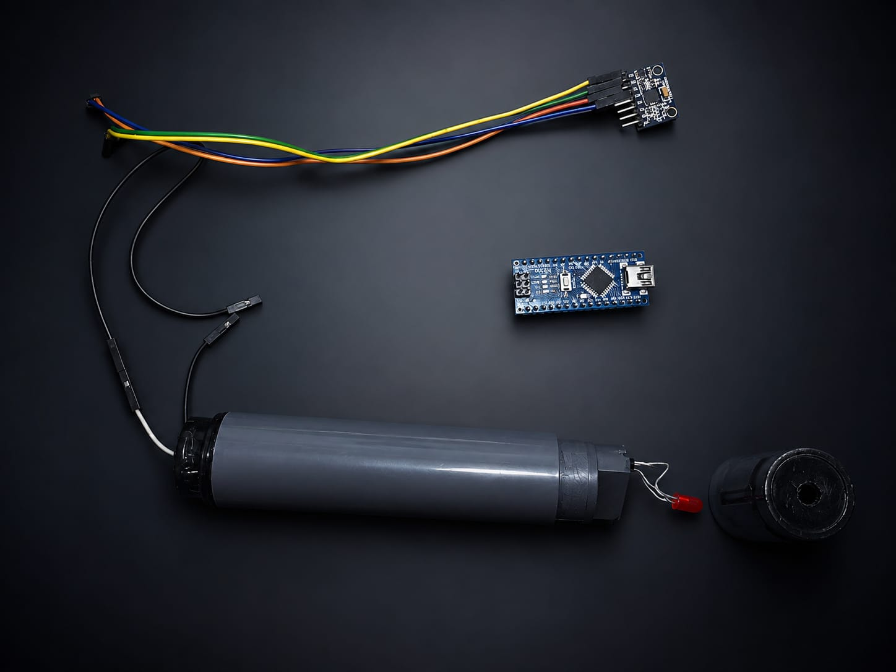
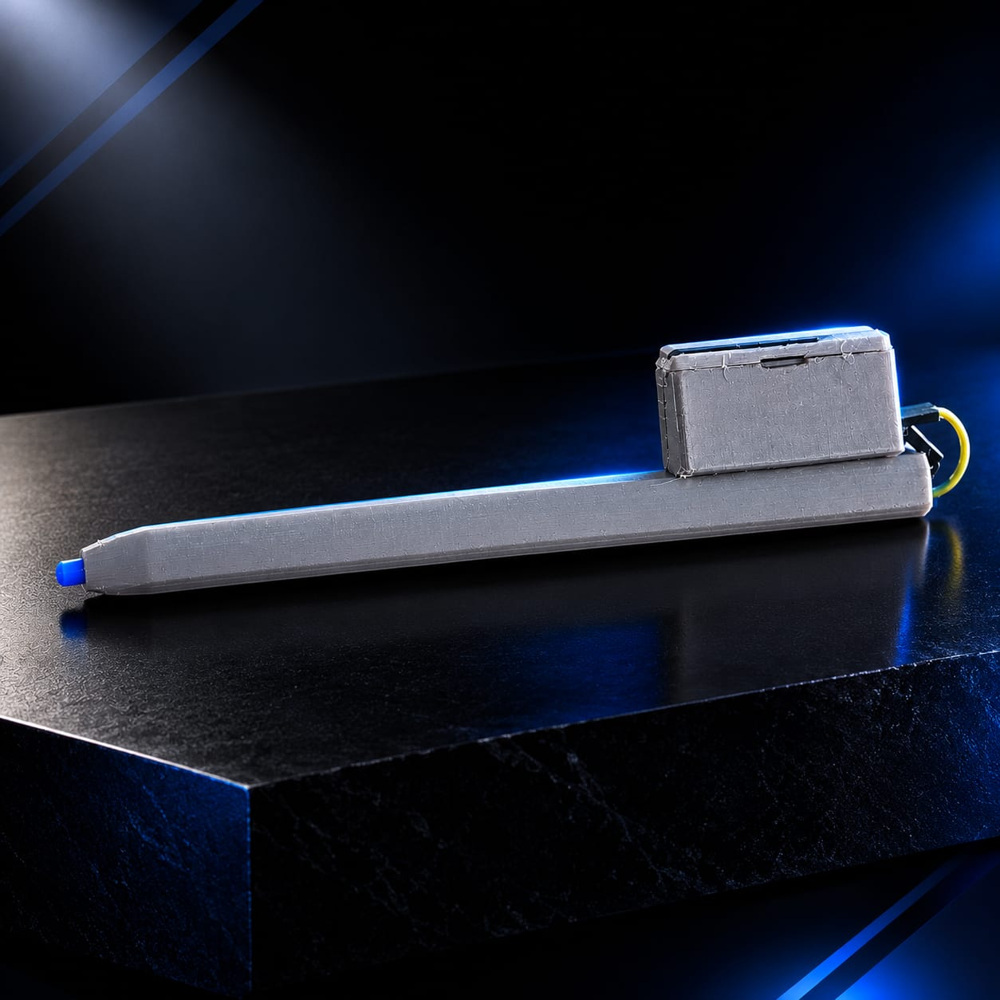
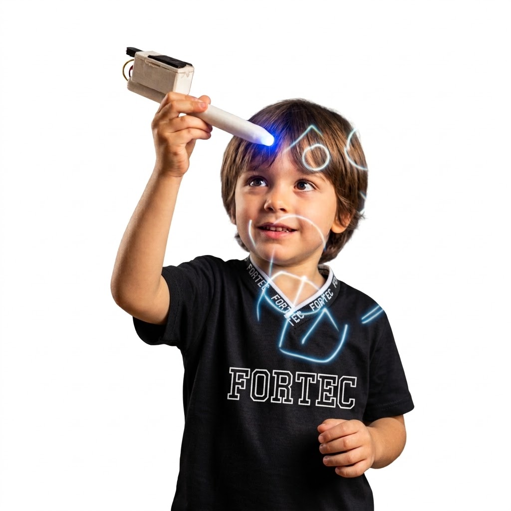
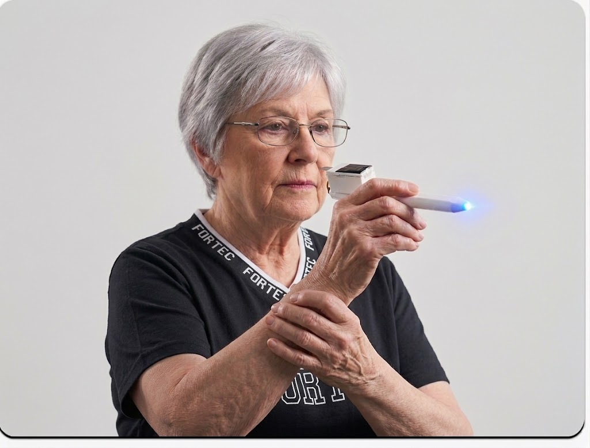
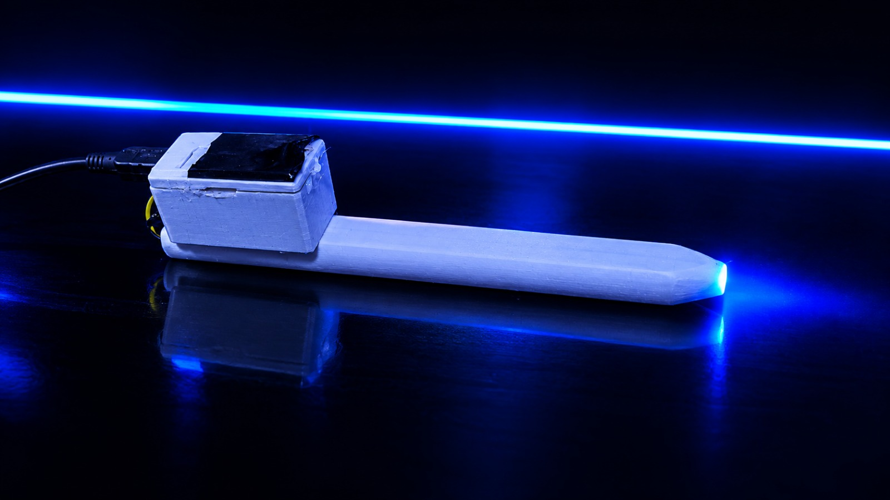
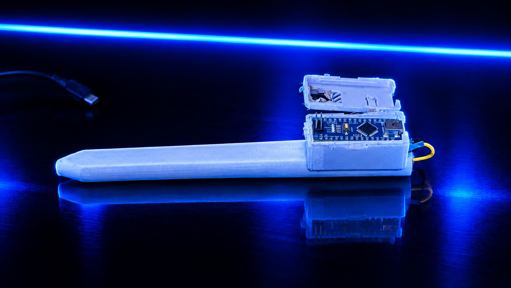
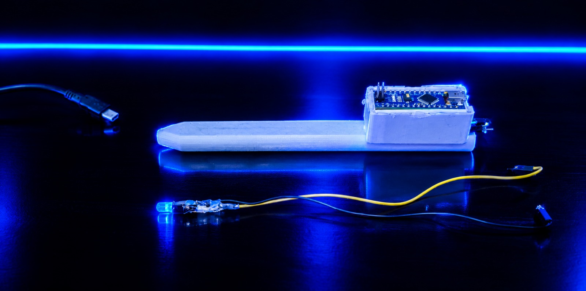

Uma ferramenta que transforma ideias em objetos, camada por camada.
Protótipo em vídeo
Protótipo em Imagem
Arraste a barra para comparar o projeto desmontado com a caneta em uso.

Antes · Desmontado
Depois · Em usoO projeto
O SPV 1.0 (Smart Pen Vision 1.0) é uma caneta inteligente de baixo custo, construída com Arduino Nano e sensores. Ela usa o conceito de air writing, captando movimentos livres feitos no ar para estimular a coordenação motora. O sistema registra a trajetória dos gestos e oferece exercícios guiados e feedback, sempre como apoio — nunca em substituição — ao acompanhamento profissional.
A smart pen permite que o paciente desenhe formas geométricas indicadas por um profissional, medindo velocidade, pressão, direção e precisão dos movimentos. A análise pode virar jogos, tornando a experiência mais leve e reduzindo o estresse em sessões longas, além de gerar dados precisos para acompanhar a evolução da recuperação motora.
Além da fisioterapia, o SPV pode apoiar a educação infantil, tornando o aprendizado de traços, formas e letras mais lúdico. Também auxilia na reabilitação motora de pessoas com deficiência ou em situações semelhantes, estimulando de forma acessível a coordenação e o controle dos movimentos.
Registros adicionais do projeto

Imagem do projeto
Imagem do projetoImagens do projeto

caneta1.jpeg
caneta2.jpeg
caneta3.jpeg